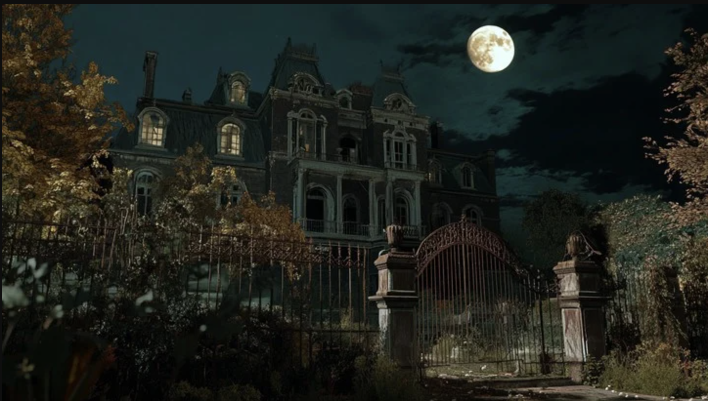

Detective Status
- Name
- Detective
- Health
- 40/40
- Current Location
- The Laboratory
- Inventory
- Empty

The Laboratory
You are working in the laboratory, preparing your mice specimen for a test run simulating landing on the planet of Mars. One or two mice quietly climb out of the box, but you don’t mind too much, Miles will be able to catch them, anyways he is both emotional support cat and also spare mouse hunter. You grab the pipette, and prepare the solution that will help feed the mice for their journey to the surface of Mars. Suddenly, the lights go out. The ship sounds slowly all turn off in the rooms around you. There are small guide lights illuminating the doorways and hallways. Where do you go to explore?